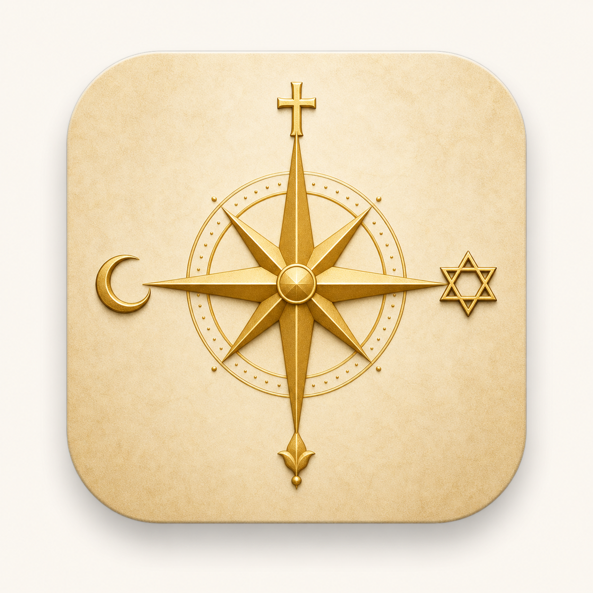
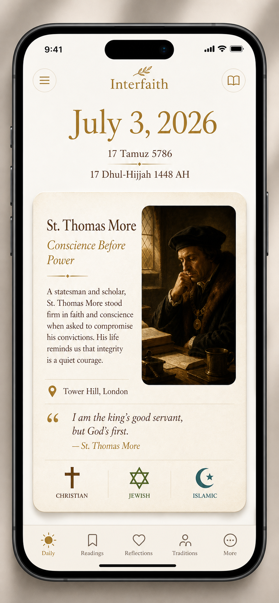
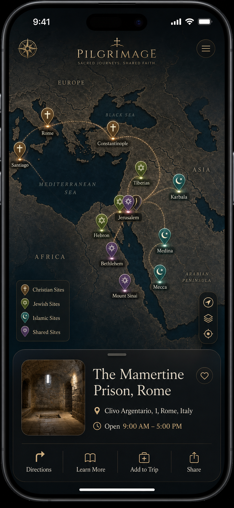

A daily kaleidoscope of saints, calendars, art, and GPS pins across the Abrahamic traditions — for the historically curious, not the devotional.
Generated via OpenAI gpt-image-2-medium. Each explores a different visual register for the app.



Multi-Model Review (goal-first mode) across openrouter/free, NVIDIA Nemotron, and GLM-4.5-flash. DeepSeek-V4-flash rate-limited. All findings folded into the plan.
Garden Grove hardcode gives wrong Hebrew/Islamic dates for ~50% of users. Use device timezone + GPS + SunCalc library. No manual toggle — auto is correct.
Show "This week's pilgrimage sites" (7-day window), not just today's pin. Premium unlocks full archive + routes. Map tab shouldn't feel empty.
Add icon overlays (cross, Star of David, crescent, interlocking circles) alongside tradition colors. 8% of male users are colorblind.
Value-based gate (after 3 archive views / 5 saves), not session-count. "Unlock the Archive" CTA converts faster than "7 days free."
150ms stagger (not 300ms). Respect prefers-reduced-motion. Long-press to replay. Triggers on first daily open, not every session.
Narrative vignette — "three witnesses saw the same light" — not comparative theology. Single voice, place-linked, no homework feel.
ElevenLabs TTS on daily card (~$0.01/day). Free = synthetic voice. Premium = human-narrated. Hallow/Glorify all lead with audio.
"Thematic day across traditions" fallback (e.g. "A Day of Fasting") preserves the interfaith promise. All 5 sections always render.
Automated Wikidata SPARQL fact-check + human spot-review 10%. Error report → hotfix in <4h. Confidence badges on every event card.
Warm, earthy, reverent. Each tradition gets a distinct hue that carries semantic weight without feeling like a brand color.
Same content, different visual languages. Each shifts the emotional center of gravity.
Parchment textures, sepia tones, manuscript-style headers. The app feels like an ancient codex. Warmest option, most familiar to Catholic users who grew up with missals and breviaries.
Clean geometric grids, tile-inspired patterns in backgrounds. Islamic geometric influence in dividers and card borders. Most modern option. Best for interfaith positioning.
High contrast, dark mode default, spotlight-on-content. Each card feels illuminated from within, like a Caravaggio. Dramatic. Best for art-heavy content.
Four quick directions. The compass rose concept (top of page) is the most developed — these are rough alternatives.